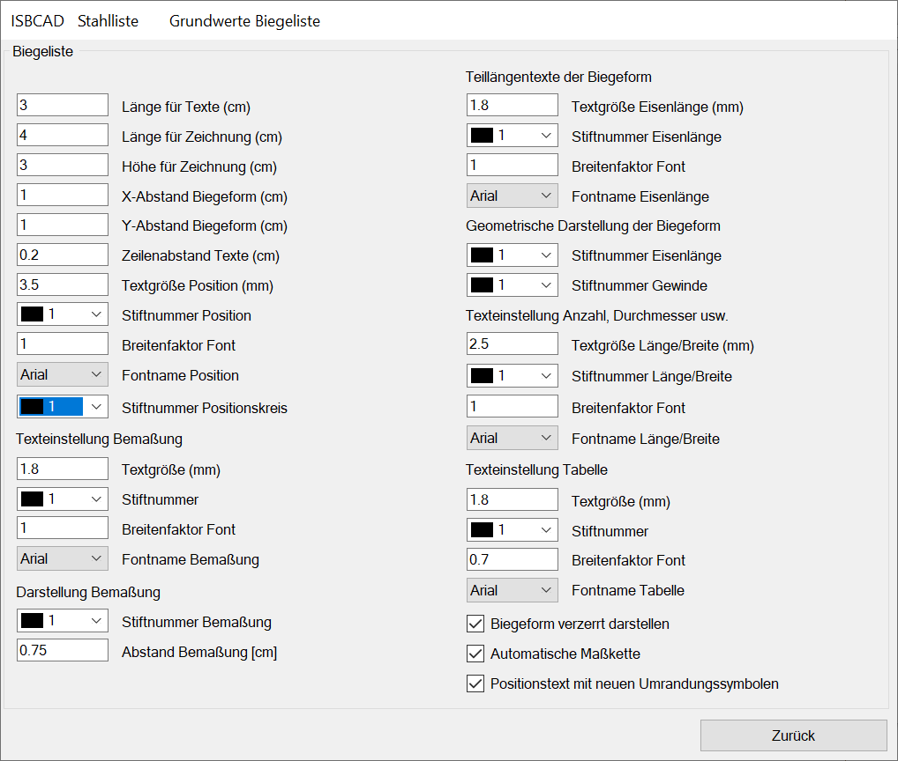
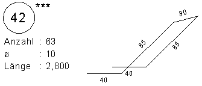
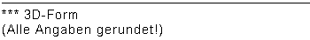
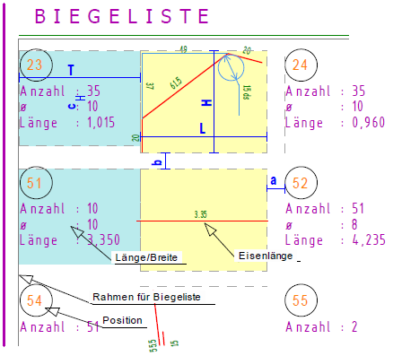

Angaben zu der Gestaltung der Biegeliste.
Optionen im Dialog "Grundwerte Biegeliste"
 |
3D-Formen
  Wenn eine 3D-Form verlegt worden ist, dann wird der Position automatisch ein Vermerk (***) hinzugefügt, dass es sich bei dieser Position um eine 3D-Form handelt. Der Vermerk wird ebenfalls in die Fußnote geschrieben. |
Biegeliste
Länge für Text (cm) Dieses Maß wird für den Text reserviert. Siehe Bild: Elemente der Biegeliste „T“. Länge für Zeichnung Für die Darstellung der Biegeform bereitgestellter Raum. „L“. Höhe für Zeichnung Höhe für die Darstellung der Biegeform. „H“. X-Abstand Biegeform Abstand zwischen den Positionen. Siehe Skizze „a“. Y-Abstand Biegeform Vertikaler Abstand zwischen den Zeichnungsbereichen. „b“. B = n*(T+L)+(n-1)*a; B = Breite des inneren Rahmens, n = Anzahl der Spalten. Zeilenabstand Texte Abstand der Ober- zur Unterkante Text für Länge/Breite. „c“. Textgröße Position (mm) Geben Sie die Größe des Positionstextes an. |
Bild: Elemente der Biegeliste  |
Stiftnummer Position Eingabe der Stiftnummer aus dem Dialog Grundwerte Allgemein „Farbe und Breite für Druckausgabe“. Breitenfaktor Font Zugehöriger Breitenfaktor. Fontname Position Auswahl des Schrifttyps. Stiftnummer Positionskreis Wählen Sie für den Kreis einen Stift aus. Grundwerte Allgemein: „Farbe und Breite für Druckausgabe“. |
|
Texteinstellung Bemaßung
Wenn die automatische Bemaßung gewählt ist, stellen Sie die folgenden Parameter ein. Textgröße Geben Sie die Größe der Maßzahlen in mm ein. Stiftnummer Geben Sie die Nummer des Stiftes an, der die gewünschte Breite aufweist. [Datei | Drucken | Einst → Stifte/Farben]. Breitenfaktor Font Geben Sie eine Breite für die Maßzahlen an. Mit <1 werden die Buchstaben schmaler. Fontname Bemaßung Klicken Sie eine der Schriftarten aus der Auswahlbox an. |
Darstellung Bemaßung
Für die automatische Bemaßung: Stiftnummer Bemaßung Geben Sie die Stiftnummer für das Maßkettengerüst an. Abstand Bemaßung Dies ist der Abstand der Maßkette von der Teillänge und der Abstand von Maßketten untereinander. |
Teillängentexte der Biegeform
Textgröße Eisenlänge Größe der Texte an den Teillängen. Stiftnummer Eisenlänge Stiftnummer für die Teillängentexte. Breitenfaktor Font Zugehöriger Breitenfaktor. Fontname Eisenlänge Wählen Sie aus der Tabelle die gewünschte Schriftart aus. |
Geometrische Darstellung der Biegeform
Stiftnummer Eisenlänge Strichbreite für die Darstellung der Form. Stiftnummer Gewinde Geben Sie die Stiftnummer für die Darstellung der Gewinde an. |
Texteinstellung Anzahl, Durchmesser usw.

Zugehörige Referenzen:
Siehe auch: